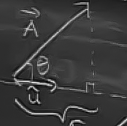
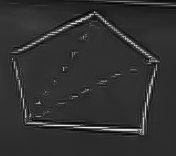
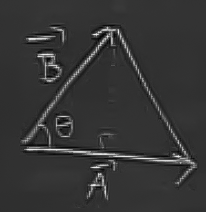
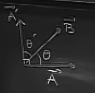
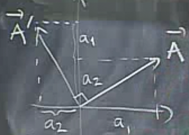
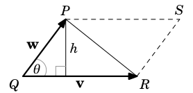

Önceki derste iki uygulama gördük. Üçüncü bir uygulama bir $\vec{A}$ vektörünün bir birim vektör $\vec{u}$ yönündeki bileşenlerini / parçalarının (components) hesaplanmasıdır.

Üstteki şekilde $\vec{A}$'nin $\vec{u}$ yönündeki "yansımasını" görüyoruz ve bu yansıma $\vec{A}$'nin $\vec{u}$ yönündeki bileşenidir, büyüklüğüdür.
Aradaki açı $\theta$ ise ve üçgen dik ise, o zaman bu yansıma
$$ |\vec{A}| \cos \theta $$
olarak hesaplanacaktır. Bu formülün ilk hali aslında
$$ |\vec{A}| |\vec{u}| \cos \theta $$
fakat $\vec{u}$ birim vektör olduğuna göre, uzunluğu 1, o zaman bu büyüklük çarpımdan atılabilir. Üstteki formül aynı zamanda bir noktasal çarpım, $\vec{A}\cdot\vec{u}$.
Eğer bir vektörün mesela $\hat{i}$ yönündeki yansımasını almak isteseydik,
$$ \vec{A} \cdot \hat{i} $$
kullanırdık, bu da
$$ \vec{A} \cdot <1,0,0>$$
olurdu. Bu çarpım $x$ yönünde 1 ile çarpar diğer tüm eksenleri sıfırlar, yani diğer bir değişle $\vec{A}$'nin $x$ yönündeki bileşenini hesaplamış oluruz. Bu arada $\hat{i}$ tabii ki bir birim vektör. Uzunluğu 1.
Uygulama
Fizikte, yuvarlak bir şekilde dönebilen bir sarkaç problemini düşünelim. Bu sistemi analiz etmek için Newton Kanunu, mekanik, vs. kullanmanız gerekir tabii ki, fakat vektörler geometrik olarak bu sistemi anlamak için çok faydalıdır.
Bu sarkacın ileri geri sallanmasının sebebi üstte takip edilen yuvarlak yoldur. Analiz için $x, y$ yönündeki bileşenlere bakmak yerine belki de resimdeki iki birim vektör yönüne bakmamız lazım, ki bu vektörlerden biri takip edilen yola teğet yönü gösteren $\vec{T}$, diğeri yuvarlak tanjantina dik olan $\vec{N}$. O zaman ağırlığı temsil eden $\vec{F}$'in bu iki vektör yönündeki bileşenlerine bakabiliriz.
Resimde ipin gerginliği (tension of string) $\vec{N}$ yönünde, bu yön ip gerginliği yönü, $\vec{F}$'in $\vec{N}$ yönündeki bileşeni gerginliği yaratan faktördür. $\vec{F}$'in teğetlik yani $\vec{T}$ yönündeki bileşeni ise ileri geri hareketi sağlayan faktördür.
Muhakkak sarkacın $y$ ekseni ile oluşturduğu bir açı $\theta$ üzerinden bir sürü $\cos, \sin$ terimleri içeren denklemler ortaya çıkartabilirdiniz, bu ilginç olurdu, fakat eğer daha kısa bir yolu takip etmek istiyorsak, noktasal çarpım kullanırız.
Vektörler bağlamında anlamamız gereken bir diğer kavram, alan kavramı. Diyelim ki elimizde bir pentagon şekli var. Bu şeklin alanını vektörler kullanarak hesaplayabilir miydik?

Evet hesaplayabiliriz. Problemi basitleştirelim. Pentagonu üçgenlere ayıralım.

sonra bu alanları toplayalım. Üçgen alanını nasıl hesaplarız? Şöyle bir üçgen düşünelim

Bu üçgenin alanı
$$ \frac{1}{2}|\vec{A}||\vec{B}|\sin(\theta) $$
Bu formül $\cos$ içeren diğer formülümüze benziyor. Bundan istifade edebiliriz belki. Önce $\cos(\theta)$'yi buluruz, sonra $\sin^2\theta + \cos^2\theta = 1$ esitligini kullanarak $\sin(\theta)$'yı buluruz.
Fakat bu gereğinden fazla iş yaratır. Daha kolay bir yöntem var. Bu yöntem için determinantlar kullanmak lazım.
Devam edelim: Madem açıların $\cos$ değerlerini bulmayı biliyoruz, belki öyle bir diğer açı bulmalıyız ki o açının $\cos$ değeri bizim aradığımız açının $\sin$ değeri olsun, çünkü alan için $\sin$ gerekiyor, ama hesaplayabildiğimiz $\cos$.
Birbirini tamamlayıcı açılar (complemantary angles) kavramını biliyoruz herhalde.

Diyelim ki elimizde $\vec{A}$ var, onu $90^o$ çevirip üstteki hale getiriyoruz, yeni vektöre $\vec{A'}$ diyelim. O vektör ile $\vec{B}$ arasındaki açıya da $\theta'$ diyelim.
$$ \theta' = \frac{\pi}{2} - \theta $$
$$ \cos \theta' = \sin \theta $$
Bu demektir ki
$$ |\vec{A}||\vec{B}|\sin\theta = |\vec{A'}||\vec{B}|\cos\theta' $$
$|\vec{A}|$ yerine $|\vec{A'}|$ koymakla hiçbir şey değiştirmiyorum çünkü bu vektörlerin yönleri değişik olsa da büyüklükleri aynı. Devam edelim, üstteki formülde sağ tarafı basitleştirirsek
$$ = \vec{A'} \cdot \vec{B} $$
Bu temiz bir formül. Tek eksik, $\vec{A'}$'nin ne olduğunu hala hesaplamadık. Fakat bunu yapmak o kadar zor değil. Bunun için $\vec{A}$'yi çevirebilmemiz lazım. Alttaki resme bakalım,

acaba $\vec{A'}$ ne olur? Seçenekler [bu hoca böyle ufak sınavları seviyor, faydalı aslında, bu sınavlara gelince siz de cevabını vermeye uğraşın].
Doğru cevap: 3.
Bu nasıl oldu? Alttaki resme bakalım

$\vec{A}$'nin etrafında bir dikdörtgen hayal edelim, ve dikdörtgeni içindeki vektör ile beraber alıp sola doğru çeviriyoruz. O zaman uzun kenar artık yukarı doğru bakıyor, yani $a_1$ yukarı bakıyor, $a_2$ nin de yeri değişiyor, yani bu büyüklükler yer değiştiriyorlar. Ayrıca $a_2$ artık ters yöne gittiği için işareti değişiyor. Normalde
$$ \vec{A}\cdot\vec{B} = a_1b_1 + a_2b_2 $$
vardı, üstteki çizimden hareketle ise
$$ \vec{A'} \cdot \vec{B} = a_1b_2 - a_2b_1 $$
elde ediyoruz. Bu formül determinantlardan tanıdık gelebilecek bir formül,
$$ = det(\vec{A},\vec{B}) $$
$\vec{A},\vec{B}$ ile bu vektörleri yanyana kolonlara koyduğumuz şu formu düşünüyoruz ve onun determinantını alıyoruz
$$ = \left|\begin{array}{rr} a_1 & a_2 \\ b_1 & b_2 \\ \end{array}\right| $$
Bu hesabın sonucu kenarları $\vec{A}$ ve $\vec{B}$ olan bir paralelogramın alanıdır. Tabii paralelogram içindeki üçgeni istiyorsak bu sonucu ikiye böleriz. Üçgen hesabının içinde $\sin$ içeren formül olduğunu nereden biliyoruz? Şekle bakalım

Yükseklik $h=|w|\sin\theta$'dir. Alan ise
$$ \textit{ Alan } = \frac{1}{2}|v||w|\sin\theta $$
Not: Alan pozitif bir şeydir, fakat $a_1b_2 - a_2b_1$'in kesinlikle pozitif çıkmasının garantisi yoktur. Eksi değerli terimler büyüyüp artı değerlileri aşabilirler. O zaman ifadelerimizin tam doğru olması için üstteki determinant hesabı -alan ya da +alan değerine eşittir demek lazım.
İlerleyelim. Uzayda (3 boyutta, kordinat sisteminde, vs.) yapabileceğimiz iki tür hesap var. Bunlar objelerin ya dış alan hesabı (surfaces) ya da objelerin hacim (volume) hesabı. Daha kolay olanla başlayalım, hacim hesabı.
İddia ediyorum ki bu iş için uzay ortamında kullanılabilecek bir tür determinant var. Elimizde üç vektör $\vec{A},\vec{B},\vec{C}$ var ve bu vektörlerin determinantı
$$ det(\vec{A},\vec{B},\vec{C}) = \left|\begin{array}{rrr} a_1 & a_2 & a_3 \\ b_1 & b_2 & b_3 \\ c_1 & c_2 & c_3 \end{array}\right| $$
$$ = a_1 \left|\begin{array}{rr} b_2 & b_3 \\ c_2 & c_3 \end{array}\right| - a_2 \left|\begin{array}{rr} b_1 & b_3 \\ c_1 & c_3 \end{array}\right| + a_3 \left|\begin{array}{rr} b_1 & b_2 \\ c_1 & c_2 \end{array}\right| $$
Üstteki gibi 2 x 2 determinantların açılımını biliyoruz zaten. O açılımı üstteki formül için yapınca elimize 6 tane terim geçmiş olacak. Üstteki formülü, yani bir 3 x 3 determinantın 2 x 2 açılımını hatırlamanın kısa yolu nedir? Üstte kullandığımız 1. satıra göre açılım. 1. satırda sırayla gideriz, $a_1$'e bakarız, onun olduğu satırı ve kolonu (zihnimizde) sileriz ve geriye kalan 2 x 2 determinantı hemen hesaplarız. Böyle devam ederiz. Ayrıca ikinci 2 x 2 determinantın önünde bir eksi işareti olduğuna dikkat. Bunun niye olduğunun matematiksel sebebine burada girmeyeceğiz.
Peki bu formül bize ne sağlayacak? Şu teoriyi sağlayacak:
Teori
Geometriksel olarak $det(\vec{A},\vec{B},\vec{C}) = \pm \textrm{paralelipipe'in hacmi}$. Paralelipipe nedir? Bu obje bir nevi paralelogramın 3 boyuttaki hali. Alttaki gibi

Çapraz Çarpım (Cross Product)
Tanım
$$ \vec{A} \times \vec{B} = \left|\begin{array}{rrr} \hat{i}& \hat{j}& \hat{k} \\ a_1 & a_2 & a_3 \\ b_1 & b_2 & b_3 \end{array}\right| $$
şeklindedir ve bu işlemin sonucu bir vektördür. Bu noktasal çarpımdan farklı, o sonuç bir tek sayıydı. Burada sonuç bir vektör.
Fakat bu determinant biraz garip. İçindeki elementler $\hat{i}$, $\hat{j}$ gibi birim vektörler. Bu tür determinantın öğeleri tek sayılar değil midir? Ama aslında amaç $\hat{i}$'yi olduğu gibi hesaba dahil etmek değil, bu bir notasyon sadece, böylece açılımı yaptığımızda
$$ = \left|\begin{array}{rr} b_2 & b_3 \\ c_2 & c_3 \end{array}\right| \hat{i} - \left|\begin{array}{rr} b_1 & b_3 \\ c_1 & c_3 \end{array}\right| \hat{j} + \left|\begin{array}{rr} b_1 & b_2 \\ c_1 & c_2 \end{array}\right| \hat{k} $$
$\hat{i}$, $\hat{j}$, $\hat{k}$'nin nereye gideceğini hatırlamak kolay oluyor.
Teoriler
1)
$|\vec{A} \times \vec{B}|$ bu vektörlerin oluşturduğu paralelogramın alanına eşittir. Yani alan hesabı için çapraz çarpımı yaparız, bir vektör elde ederiz, sonra bu vektörün uzunluğunu buluruz (tüm öğelerinin karesini alıp toplarız, karekök alırız, vs). Burada artı, eksi ile uğraşmamıza gerek yok çünkü bir vektörün büyüklüğü hep pozitiftir.
Yani dersin ilk kısmıyla bağlamak gerekirse, aslında $det(\vec{A},\vec{B}) = |\vec{A} \times \vec{B}|$ demiş oluyoruz. Kontrol edelim. Çapraz çarpım şöyle
$$ \vec{A} \times \vec{B} = \left|\begin{array}{rrr} \hat{i}& \hat{j}& \hat{k} \\ a_1 & a_2 & a_3 \\ b_1 & b_2 & b_3 \end{array}\right| $$
Determinant formülünü hatırlayalım
$$ = det(\vec{A},\vec{B}) $$
$$ = \left|\begin{array}{rr} a_1 & a_2 \\ b_1 & b_2 \\ \end{array}\right| $$
Bu formülde sadece $a_1,a_2,b_1,b_2$ var, o zaman çapraz çarpımı o hale getirmek için $a_3=0,b_3=0$ kullanabiliriz, çünkü iki vektörü her zaman alıp xy düzlemi üzerine koyabiliriz [1,2]. Açılımı yaptımız zaman determinant sonucu ile aynı şeyi elde ettiğimizi görürüz.
2)
Sadece büyüklük değil, $\vec{A} \times \vec{B}$ değerinin yönü de çok ilginç. $dir(\vec{A} \times \vec{B})$ paralelogramın üzerinde olduğu düzleme tam dik yönü gösteriyor. Yani $\vec{A} \times \vec{B}$ ikisinin çıktığı noktadan, bu iki vektöre de dik olan 3. bir vektörü yaratır

Peki $\vec{A} \times \vec{B}$ hesabının hangi yönde bir vektör yaratacağını nereden bileceğiz? Sağ el kuralını kullanarak.

Bu kurala göre el $\vec{A}$ yönünü gösterecek şekilde tutulur, parmaklar bükülerek $\vec{B}$ yönüne çevirilir. Bu haldeyken başparmak kaldırılır, ve bu başparmak $\vec{A} \times \vec{B}$'nin yönünü gösterecektir.
Soru

Secenekler
Doğru cevap?
Cevap 1. Yani $\hat{i} \times \hat{j} = \hat{k}$
Kontrol edelim.
$$ \left|\begin{array}{rrr} \hat{i}& \hat{j}& \hat{k} \\ 1 & 0 & 0 \\ 0 & 1 & 0 \\ \end{array}\right| = 0 \hat{i} - 0 \hat{j} + 1 \hat{k} = \hat{k} $$
Hakikaten de sonuç sağ el kuralını kullansak başparmağımızın göstereceği yön olan $\hat{k}$'yi gösteriyor.
Şimdi hacim hesabına geri dönelim. Determinant kullanmadan nasıl hacim hesabı yaparım?

Parallelipipe'nin hacminin taban alanı çarpı yüksekliği olduğunu biliyoruz herhalde. Alan nedir? Tabanın kenarı olan $\vec{B}$, ve $\vec{C}$'yi kullanırız, onların çapraz çarpımını alırız, yani $\vec{B}\times \vec{C}$. Fakat çapraz çarpımın sonucunun bir başka vektör olduğunu söylemiştik, o zaman o vektörün sadece büyüklüğünü kullanırız, $|\vec{B}\times \vec{C}|$.
Peki yüksekliği nasıl hesaplarız? Yüksekliği en azından yönsel olarak, bir birim vektör olarak bildiğimizi varsayalım, ve bu birim vektör $\vec{n}$ olsun. O zaman $\vec{A}\cdot\vec{n}$ yüksekliği hesaplayabilirdik. Şöyle.

Peki $\vec{n}$'i nasıl hesaplarız? $\vec{B}\times \vec{C}$ yükseklik yönünde üçüncü bir vektör üretmez mi? Bu vektör $\vec{n}$ ile aynı yönde olmaz mı? O zaman $\vec{B}\times \vec{C}$'yi kullanırım. Ama bu çarpım birimsel değildir, o zaman onu kendi büyüklüğü ile bölerim, ve istediğim birim vektörü elde ederim.
$$ \vec{n} = \frac{\vec{B}\times \vec{C}}{|\vec{B}\times \vec{C}|} $$
O zaman
$$ |\vec{B}\times \vec{C}| \vec{A}\cdot\vec{n} $$
$$ = |\vec{B}\times \vec{C}| \vec{A}\cdot \frac{\vec{B}\times \vec{C}}{|\vec{B}\times \vec{C}|} $$
$$ = \vec{A}\cdot (\vec{B}\times \vec{C}) $$
İşin ilginci $det(\vec{A},\vec{B},\vec{C})$'nin üstteki formülle aynı sonucu vermesidir.
Problem 1E-1
d)
Eksenler $x,y,z$ üzerinde $x=a,y=b,z=c$ noktalarını kesen düzlemin $Ax+By+Cz=1$ formundaki formülü.
Cevap
Düzlemin üzerindeki iki vektörü kullanarak onlara dik olan üçüncüyü bulma tekniğini kullanalım, böylece düzleme dik olan normali de bulmuş oluruz. Düzlem üzerindeki iki vektörü, düzlem üzerindeki üç noktayı kullanarak bulabiliriz. Çıkış noktası olarak $x$ eksenini kullanalım, o noktanın kordinatı $(a,0,0)$. Bu başlangıç noktasından $(0,0,c)$'a ve $(0,b,0)$ noktasına giden iki vektör bulunabilir. Vektörler çıkartma işlemi kullanılarak bulunur
$$ \vec{A} = (a,0,0) - (0,0,c) =
$$ \vec{B} = (a,0,0) - (0,b,0) =
Çapraz çarpım
$$ \vec{A} \times \vec{B} = \left|\begin{array}{rrr} \hat{i}& \hat{j}& \hat{k} \\ a & 0 & -c \\ a & -b & 0 \end{array}\right| $$
$$ = \left|\begin{array}{rr} 0 & -c \\ -b & 0 \end{array}\right| \hat{i} - \left|\begin{array}{rr} a & -c \\ a & 0 \end{array}\right| \hat{j} + \left|\begin{array}{rr} a & 0 \\ a & -b \end{array}\right| \hat{k} $$
$$ = -cb\hat{i} + -ca\hat{j} -ab \hat{k} $$
O zaman düzlem
$$ -cbX + -caY -abZ = d $$
$d$'yi hesaplamak için bilinen bir noktayı bu formüle sokarız, mesela $(a,0,0)$,
$$ -cba = d $$
O zaman düzlem
$$ -cbX + -caY -abZ = -cba $$
ya da
$$ cbX + caY + abZ = cba $$
Problem eşitliğin sağ tarafında 1 olsun diyor, iki tarafı $cba$'ya bölersek
$$ \frac{1}{a}X + \frac{1}{b}Y + \frac{1}{c}Z = 1 $$
Problem 1E-1
e)
$P=(1,0,1)$ ve $Q=(0,1,1)$ noktalarından geçen $\hat{i}-\hat{j}+2\hat{k}$ vektörüne paralel olan düzlem.
Cevap
Bir düzlemin normali, o düzleme paralel olan diğer vektörlere diktir. Bunu nasıl kullanabiliriz? Daha önce düzlem üzerindeki iki vektöre dik olan üçüncü vektörü bulduk. Burada düzleme paralel olan bir ikinci vektör var, fakat bu vektörü de aynı şekilde kullanabiliriz. Sonuç $x+y =1$ çıkacak.
Kaynaklar
[1] Anton, Rorres, Elementary Linear Algebra with Applications, 9th Edition
[2] Michael Corral, Vector Calculus, sf. 21